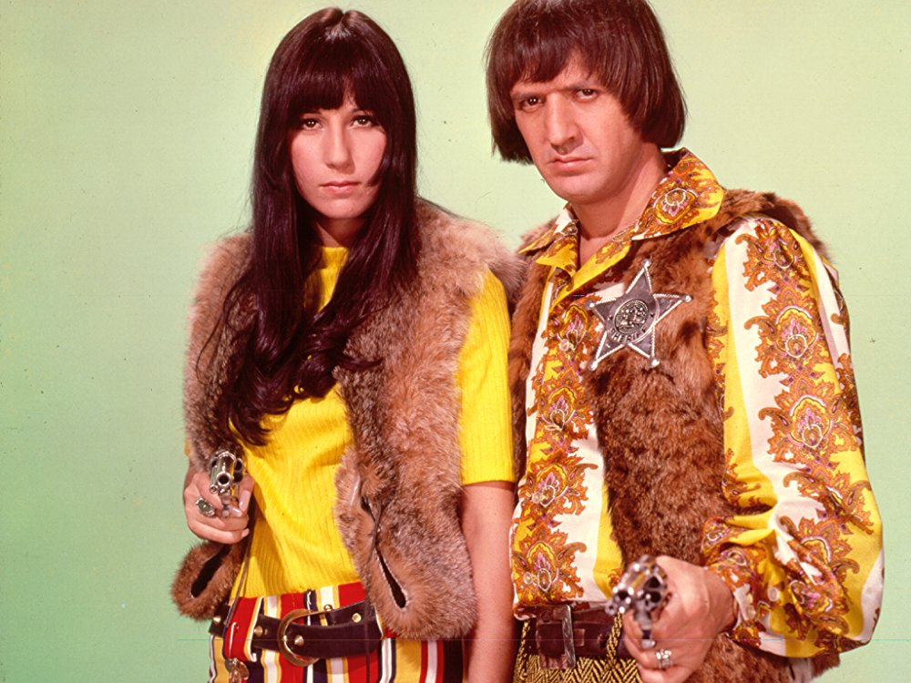

Wednesday, September the 6th, 2017
back to: title, date or indexes

Daniel Barenboim has won many plaudits for his creation of the West-Eastern Divan Orchestra, bringing together young musicians from different countries in the Middle East to promote the cause of peace. Laudable as his efforts are, several observers have noted that the world of classical music is too small and narrow to have real societal heft. Pop music, they say, is the lingua franca that can genuinely bring people of different faiths together. To this end, and as a faltering first step in resolving the simmering civil war between the two major branches of Islam, a new single has been released. It is a new version of “I Got You Babe” by Sunni and Shia.
Hooting Yard on the Air, November the 2nd, 2017 : “Mudguard” (starts around 14:24)